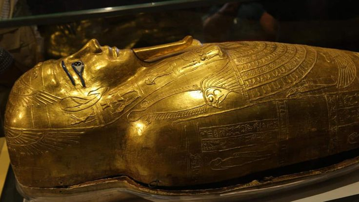

The coffin is one of the three coffins of the young king, portraying the golden king as God Osiris. The coffin was discovered in King Tut’s burial chamber in 1922. The outer ark is made of gilded wood. The hands are clipped with gold foil, crossed across the chest, while holding royal decals inlaid with blue and red glass beads. It is 223.5 cm in length, 86.8 cm in diameter, while its height is 105.5 cm. The ark contains silver handles on both sides that were used to move the lid.